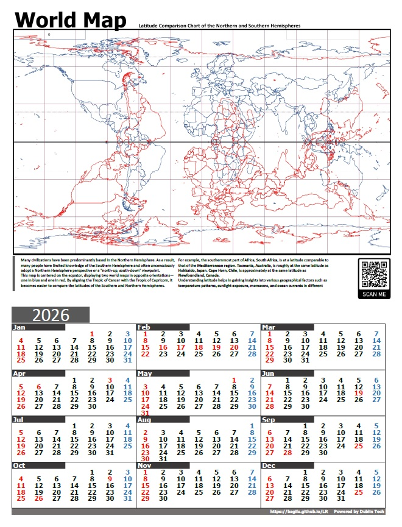

2026年曆海報-南北緯對應世界地圖-A3直式
此地圖呈現世界地圖南北緯度對折之後的對應，遠看像是一隻美麗的蝴蝶或大腦圖像
舊書、新書與文創小物，逐步增加。
此地圖呈現世界地圖南北緯度對折之後的對應，遠看像是一隻美麗的蝴蝶或大腦圖像
以舊書視覺為靈感製作的空白筆記本，適合寫下閱讀筆記與生活片段。
以平實文字介紹經典科學概念，適合對世界運作方式感到好奇的讀者。
小量製作的木質書籤，保留木紋與手感，陪你標記每一次暫時合上的頁面。
收錄數本保存良好的舊版小說，本數有限，適合喜歡老版排版的讀者。
以老師的課堂內容改寫而成的小冊，從日常切入歷史，輕鬆卻有深度。
書籍搭配簡單茶包的小組合，適合帶回家重現讀書館的一個下午。
以書店一隅為概念設計的明信片組，可以寄給朋友，也可以自己收藏。